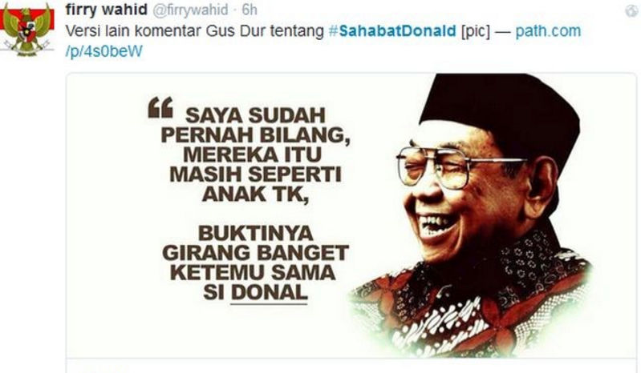

beranda
 Kyai Haji Abdurrahman Wahid atau yang akrab dipanggil Gus Dur
lahir di Jombang, Jawa Timur pada tanggal 7 September 1940. Ia lahir dengan nama Abdurrahman Adakhil yang berarti sang penakluk. Karena kata “Adakhil” tidak cukup dikenal, maka diganti dengan nama “Wahid” yang kemudian lebih dikenal dengan Gus Dur. Gus adalah panggilan kehormatan khas Pesantren kepada seorang anak kiai yang berarti “abang atau mas”. Gus Dur adalah anak pertama dari enam bersaudara. Ia lahir dari keluarga yang cukup terhormat. Kakek dari ayahnya, K.H. Hasyim Asyari, merupakan pendiri Nahdlatul Ulama (NU). Sementara itu kakek dari pihak ibu, K.H. Bisri Syansuri, adalah pengajar pesantren pertama yang mengajarkan kelas pada perempuan. Ayahnya K.H. Wahid Hasyim merupakan sosok yang terlibat dalam Gerakan Nasionalis dan menjadi Menteri Agama tahun 1949, sedangkan ibunya Ny. Hj. Sholehah adalah putri pendiri Pondok Pesantren Denayar Jombang. Gus Dur pernah menyatakan secara terbuka bahwa ia adalah keturunan TiongHoa dari Tan Kim Han yang menikah dengan Tan a Lok, yang merupakan saudara kandung dari Raden Patah (Tan Eng Hwa) yang merupakan pendiri kesultanan Demak. Tan a Lok dan Tan Eng Hwa ini merupakan anak dari Puteri Campa yang merupakan Puteri Tiongkok yaitu selir Raden Brawijaya V. Berdasarkan penelitian seorang peneliti Perancis Louis Charles Damais, Tan Kim Han diidentifikasikan sebagai Syekh Abdul Qodir Al Shini yang makamnya ditemukan di Trowulan. Pada tahun 1944 Abdurrahman Wahid pindah dari kota asalnya Jombang menuju Jakarta, karena pada saat itu ayahnya terpilih menjadi ketua pertama Partai Majelis Syuro Muslimin Indonesia yang biasa disingkat “Masyumi”. Masyumi adalah sebuah organisasi dukungan dari tentara Jepang yang pada saat itu menduduki Indonesia. Setelah deklarasi kemerdekaan Indonesia pada tanggal 17 Agustus 1945, Gus Dur kembali ke Jombang dan tetap berada di sana selama perang mempertahankan kedaulatan Indonesia melawan Belanda. Ia kembali ke Jakarta pada akhir perang tahun 1949 karena ayahnya ditunjuk sebagai Menteri Agama.